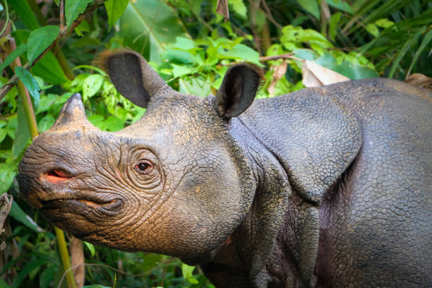
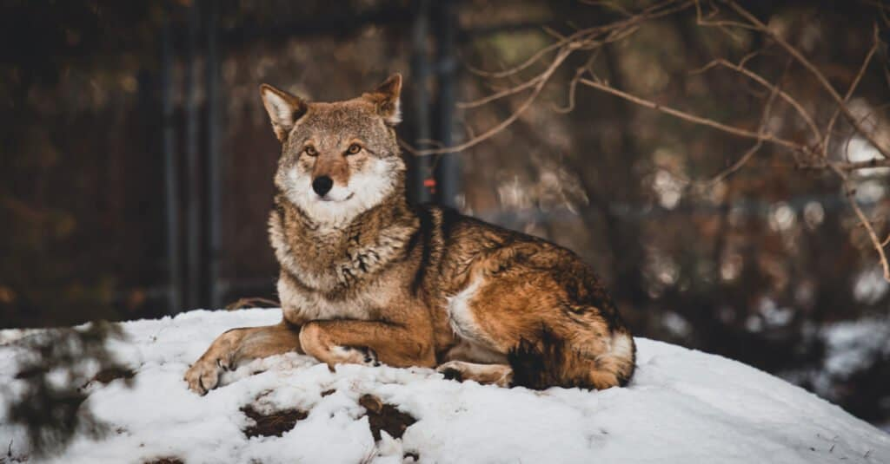
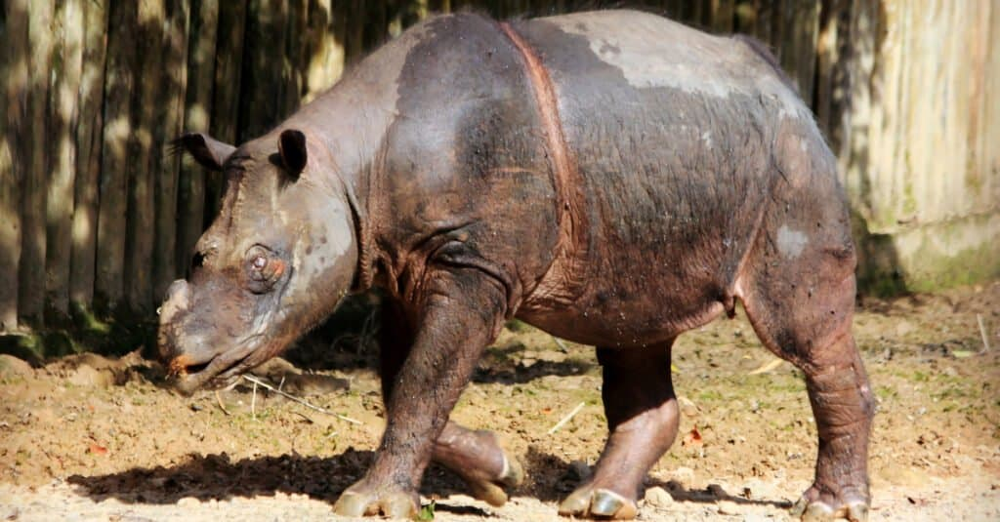
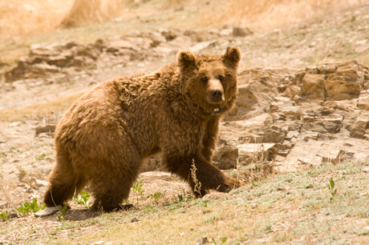
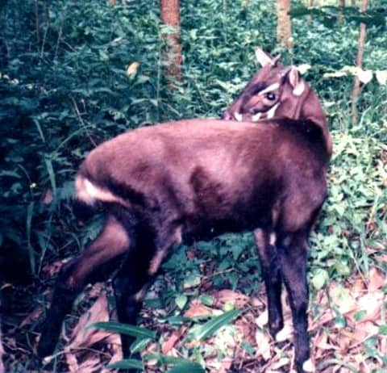
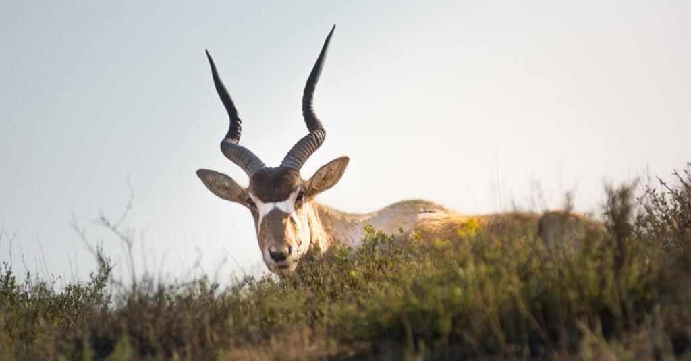
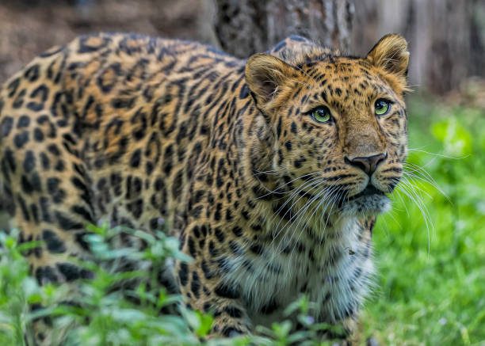
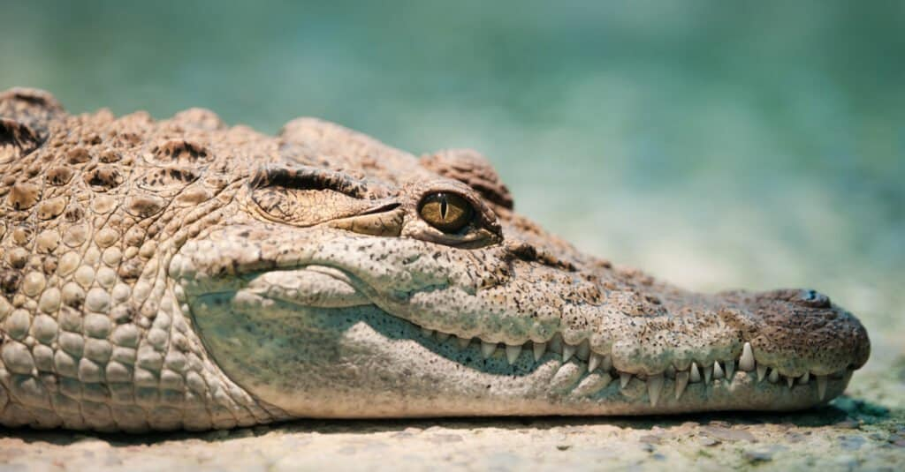
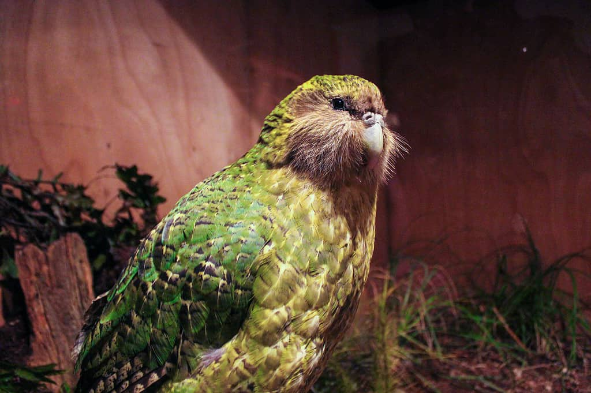

Rare Animals Species
1. Vaquita
Rarest animal - Vaquita
On the brink of extinction, the vaquita is the smallest living species of cetacean.
The single rarest animal in the world is the vaquita (Phocoena sinus). This porpoise lives only in the extreme northwestern corner of the Gulf of California in Mexico. Since the population was recorded at 567 in 1997, it has since declined to its current state of 18. It is likely that the vaquita will be extinct within a decade.
Unlike other porpoises, mature females average one birth every two years which is double the length of time in other species. While other potential threats have been suggested, the unregulated use of gill nets for commercial fishing has been the single biggest killer of vaquitas. Two studies showed that boats from a single port were responsible for the deaths of between 7-15% of the entire vaquita population in just one year.
All of these species are so close to the brink of extinction that it may already be too late to save some of them. Severely fragmented populations with a declining number of mature adults make preserving these creatures naturally in the wild a gigantic challenge. The majority of these animals have limited or no population in captivity either. For all of these reasons, it’s as important as ever to learn about the difficulties facing some of the rarest animals in the world, and what we may be able to do about them.
2. Javan Rhinoceros

Once the most widespread of Asian rhinoceroses, the Javan rhinoceros is now a very rare member of the family Rhinocerotidae.
The Javan rhinoceros (Rhinoceros sondaicus) is an Indonesian rhino that exists only within one nature preserve on the island of Java. No other herds exist as the species is extinct in the entirety of its former region, and this preserve is occupied by the maximum amount of animals that it can support at 68. The current mature adult population estimated to be capable of breeding stands at only 18.
The major threat to the Javan rhino is poaching to obtain its horn for resale and traditional Asian medicine. A unique threat facing this species is the presence of a palm called langkap. This palm is an invasive species that entirely choke out any other form of vegetation including the preferred diet for the rhinos.
3. Red Wolf

There has been some debate as to whether the red wolf is a hybrid of wolf and coyote, a subspecies of the gray wolf or its own distinct species. This has sometimes led to the red wolf being left off of the endangered species list.
The red wolf (Canis rufus) is the only North American entry on our list of the rarest animals in the world, but it is also one of the most threatened. This species was extinct in the wild by 1980, but it was reintroduced into Eastern North Carolina by the US government in 1987. This reintroduction was so successful that over 150 animals established themselves in the region.
This rapid growth brought about concerns over cross-breeding with coyotes and conflict with area landowners.
As a result of those conflicts, the federal government reduced the program to only encompass federal lands and preserves in the easternmost part of the state. This region can only support a pack of mature adults in the realm of 30 members. At this point in time, the estimated population is believed to be below that number and declining.
4. Sumatran Rhinoceros

Though it’s still a large animal, the Sumatran Rhinoceros is the smallest — and one of the rarest — of all the Rhinocerotidae members.
The Sumatran rhinoceros (Dicerorhinus sumatrensis) is the next entry on our list of the rarest animals in the world, and this rhino is one of the most critically endangered large mammals with populations only remaining in Indonesia. In the last 30 years, their population has been reduced by over 80% primarily due to poaching and habitat loss, and there are estimated to be only 30 mature adults left in viable populations.
The population groups of the Sumatran rhino are so fragmented that it is impossible to join many of them together. Even with conservation efforts, it is unlikely that small populations of two to five rhinos can be saved, and the largest recorded group only has 15 mature rhinoceroses.
5. Gobi Bear

gobi desert , Mongolia
The Gobi Desert in Mongolia, was once part of the famous Silk Road and home to the Gobi bear.
The Gobi bear (Ursus arctos gobiensis) is a subspecies of brown bears that exist only in the Gobi desert of Mongolia. There are less than 40 mature adults remaining in the wild, and no Gobi bears are held in captivity. This bear is a rugged and persistent scavenger who manages to live in a region that averages less than four inches of rainfall per year.
Habitat loss due to mining in the area and uncontrolled grazing of other animals devastated the Mongolian grasslands of ages past, and this has resulted in a significant impact on all species living in the area. Furthermore, a 14-year drought in which less than two inches of rain fell annually further depleted the scarce vegetation that the Gobi bear lives on.
Conservation efforts are in place such as designating the bears’ last three habitats one large national preserve, and researchers have tagged 20 adults to monitor the population.
6. Saola

Saola
The Saola is so rare, it is often referred to as the Asian Unicorn.
The saola (Pseudoryx nghetinhensis) is a close relative of cattle but more closely resembles a deer. They are sometimes called the Asian unicorn due to their scarcity and their secretive behavior. The saola was only discovered in 1992 in the evergreen forests of Vietnam, and no study to estimate their population size has ever been successful due to the thick forests of Vietnam and the political climate of Laos.
Threats to the saola include habitat loss and incessant hunting to fill the local demand for bushmeat and medicinal supplies. The saola is so infrequently captured on trap cameras that researchers have concluded that it’s possible that no viable herds remain in existence. There is no saola in captivity, and estimates in the wild range anywhere from 25-750 mature adults.
7. Addax

Native to the Sahara Desert, the Addax is incredibly rare due to unregulated hunting.
The addax (Addax nasomaculatus) is an antelope that previously ranged across the deserts of Africa. Today, you can only find them in the Termit Tin Toumma region of Niger. Thousands of addax live in captivity in various preserves around the world, but only an estimated 30-90 mature adults still exist in the wild.
The addax were initially severely reduced by unregulated hunting, and the increase in oil drilling in their natural habitats and political instability has brought even more armed humans to the region.
The addax antelope (Addax nasomaculatus) is perhaps the loneliest mammal on the planet. These majestic, snow-white (in summer) antelope once roamed in abundance across North Africa but poaching and industrialization pushed the wild population to the brink of extinction.
8. Amur Leopard

The Amur leopard has been considered one of the rarest cats on earth. In 2007, it was estimated that only 19 to 26 wild leopards were living in southeastern Russia and northeastern China.
The Amur leopard (Panthera pardus orientalis) is a resident of the Amur region of Russia and China. It is almost exclusively hunted for its spotted fur, and its population has grown from an estimated 14 adults in 2005 to around 84 mature adults today. The establishment of a preserve in the Russian Far East region has enabled the recent recovery of the species, but a lack of prey will inhibit a return to their former spread.
Weighing in between 75-100 pounds, this impressive leopard can run at speeds of 37 mph, leap 19 feet horizontally, and jump 10 feet straight up into the air.
9. Philippine Crocodile

Rarest animal - Phillipine crocodile
One of only two crocodile species found in the Philippines, the Philippine crocodile is so rare that conservation methods are being taken for its protection.
Philippine crocodiles (Crocodylus mindorensis) are not faring as well as the kakapo. With an estimated declining mature adult population of 92-137 members, the species is severely fragmented across the inland wetlands of the Philippine Islands. This crocodile is smaller in stature than its relatives with the largest specimen captured in the wild being under nine feet long. Their primary food sources as adults consist of fish, pigs, dogs, and waterfowl.
The habitats of Philippine crocodiles include freshwater areas like rivers, marshes, and ponds. While hunting them for their skin was an early threat that grossly decreased their numbers, the biggest current threat to Philippine crocodiles is the clearing of rainforests in the region for rice fields. Also another species, the estuarine (saltwater) crocodile, inhabits the same area, and is known to kill and eat humans. So locals tend to kill any crocodiles they encounter, thereby contributing to the falling numbers of the Philippine croc.
10. Kakapo

Kakapo
Kakapo sightings are exceedingly rare.
The kakapo (Strigops habroptila) is a nocturnal, flightless parrot with a lifespan of 60 years that is native to New Zealand. Kakapos were utterly devastated by the human colonization of the island nation and the subsequent introduction of cats to the region. The parrot is believed to be extinct in its native range. A government-sponsored conservation and relocation effort has resulted in the species now steadily increasing in population size.
There are currently 116 mature adults spread across three smaller islands of New Zealand. The region is almost entirely protected, and all adults are tagged and monitored by conservationists. Testing of the breeding age adults and supplemental feeding have shown significant increases in the rate of birth and overall survival.